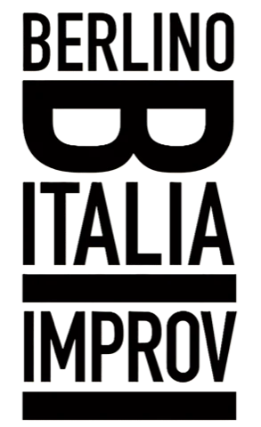
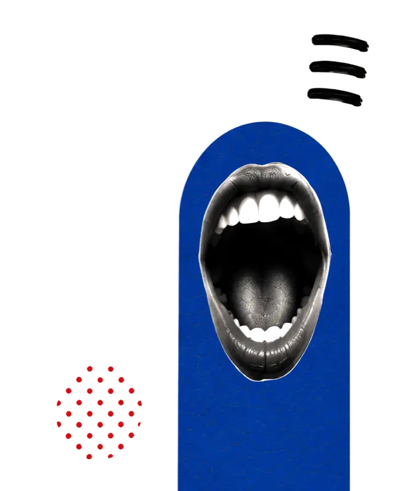

Berlino ItaliaAppuntamento fisso al teatro Acud, Veteranenstraße 21. Sette format ricorrenti di improvvisazione — normalmente in italiano, qualche volta multilingua. Mai due sere uguali.

Due squadre, un arbitro impassibile, e il pubblico che lancia le ciabatte.
Il format di Keith Johnstone. Il pubblico vota, gli improvvisatori vengono eliminati uno a uno. Ne resta soltanto uno.
Giochi classici e narrazione: storie ispirate dal pubblico che prendono vita durante la serata.
Volontari dal pubblico salgono sul palco a inventare storie insieme agli improvvisatori.
Come il classico gioco da tavolo, ma le tessere sono gli attori in scena. Format vincitore di Pandora Festival 2016.
Lo show multilingua nato con le scuole tedesca, spagnola, francese e inglese di Berlino. Ha una pagina tutta sua.
Rodari sul palco: spettacolo interattivo per le scuole. Prenotabile con il laboratorio. Ha una pagina tutta sua.
Ogni scheda format mostra le sue prossime repliche. Il calendario completo, con l'acquisto dei biglietti, vive nella pagina Eventi.